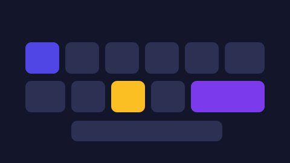

الاختصارات ليست ميزة للمبرمجين. لو استخدمت خمسة اختصارات فقط، ستوفّر ساعة أسبوعياً على الأقل. الرمز Ctrl يُقابل ⌘ Command على أنظمة macOS.
أولاً: المتصفح (أكبر مكسب)
Ctrl + TوCtrl + Shift + T— تبويب جديد، واسترجاع التبويب الذي أُغلق بالخطأ. الثانية تُنقذك عشرات المرات شهرياً.Ctrl + 1..9— الانتقال مباشرة إلى التبويب الأول أو الثاني… دون تمرير بالنظر بين عشرات التبويبات.Ctrl + L— نقل المؤشر إلى شريط العنوان لتكتب رابطاً أو بحثاً فوراً.Ctrl + Shift + R— إعادة تحميل الصفحة مع تجاهل الذاكرة المؤقتة. ضروري للمطوّرين عند تعديل الـ CSS.Ctrl + FثمEsc— البحث داخل الصفحة، ثم إغلاق صندوق البحث والعودة للنص.
ثانياً: النظام والملفات
Ctrl + Shift + V— لصق النص بلا تنسيقه الأصلي. ينقذك من عناوين ضخمة وخطوط غريبة عند نقل نص من صفحة ويب.Ctrl + ZثمCtrl + Y— تراجع، ثم تراجع عن التراجع. تعرف الأولى وتنسى الثانية فتكتب الخطأ من جديد.Alt + Tabمع الاستمرار — بدل الضغط المتكرر، أبقِAltمضغوطاً وانتقل للبرنامج الذي تريده مباشرة.
ثالثاً: تحرير النصوص
Ctrl + ←/→معShift— تحديد كلمة كلمة بدل حرف حرف، ثمCtrl + Shift + ←لتحديد فقرة كاملة. تحرير أسرع بكثير.HomeوEndمعCtrl— بداية السطر أو الملف ونهايته في ضغطة واحدة.
اختصار الرتبة الأولى: إن نسيت كل شيء واحتفظت بواحد فقط، فليكن Ctrl + Shift + T. استرجاع ما أُغلق خطأً يحدث اليوم أكثر من أي عملية أخرى.
كيف تجعلها عادة في أسبوعين
المشكلة في الاختصارات ليست معرفتها، بل تذكّرها في اللحظة المناسبة. اتبع هذا الترتيب:
- الأسبوع الأول: اختر اختصارين فقط، والصقهما على حافة الشاشة بملاحظة ورقية.
- الأسبوع الثاني: أضف اختصارين جديدين. لا تتعلّم خمسة مرة واحدة.
- عند كل انزلاق للفأرة: توقّف ثانية واسأل: هل لهذا العمل اختصار؟ إن كان الجواب نعم، استخدمه ولو كان أبطأ في البداية.
في البداية سيكون الاختصار أبطأ من الفأرة. هذا طبيعي، وهو ثمن مؤقت تقبضه أرباحاً بعد أسبوعين.
أين تجد اختصارات برنامجك؟
لكل برنامج اختصاراته الخاصة، والقائمة موجودة داخله عادة:
| البرنامج | من أين تصل إلى القائمة |
|---|---|
| المتصفح | صفحة chrome://extensions/shortcuts للامتدادات، وقائمة المساعدة للمتصفح |
| محرّر النصوص | Ctrl + K ثم Ctrl + S في VS Code، أو من قائمة ملف ← لوحة المفاتيح |
| برامج التصميم | قائمة المساعدة ← اختصارات لوحة المفاتيح |
الخلاصة في ثلاث نقاط
- أكبر مكسب فوري من المتصفح:
Ctrl + Shift + TوCtrl + LوCtrl + 1..9. Ctrl + Shift + Vيُخلّصك من تنسيق النص الملصوق بلا داعٍ.- تعلّم اختصارين كل أسبوع، واصبر أسبوعين حتى يصبح الأمر تلقائياً.